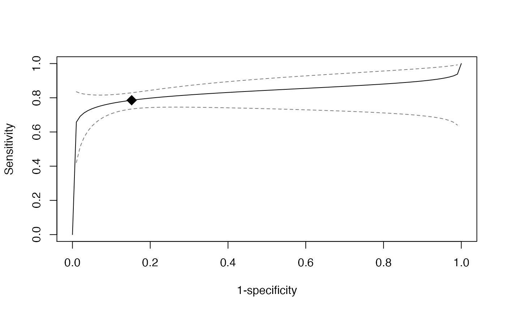

Plot a single sROC plot
sroc.vec( object, add = FALSE, sroc.col = 1, sroc.lty = 1, sroc.lwd = 1, xlab = "1-specificity", ylab = "Sensitivity", plot.ci = TRUE, ci.level = 0.95, sroc.ci.col = "grey48", sroc.ci.lwd = 1, sroc.ci.lty = 2, add.spoint = TRUE, spoint.pch = 18, spoint.col = 1, spoint.cex = 2, ... )
| object | The object from function |
|---|---|
| add | Whether to add the plot into an existed plot.
Default is |
| sroc.col | The color of sROC. Default is black. |
| sroc.lty | The line type of sROC. Default is solid. |
| sroc.lwd | The line width of sROC. Default is 1, solid. |
| xlab | The label of x-axis. Default is: 1-specificity. |
| ylab | The label of y-axis. Default is Sensitivity. |
| plot.ci | Whether to plot confidence interval of sROC.
Default is |
| ci.level | The significance level of confidence interval of sROC.
Default is |
| sroc.ci.col | The color of confidence interval of sROC. Default is grey. |
| sroc.ci.lwd | The line width of confidence interval of sROC. Default is 1. |
| sroc.ci.lty | The line type of confidence interval of sROC. Default is 2, dashed. |
| add.spoint | Whether to add the summary point in the sROC plot. Default it not the add. |
| spoint.pch | The type of the point. Default is 19. |
| spoint.col | The color of the point. Default is black. |
| spoint.cex | The size of the point. Default is 1. |
| ... |
SROC plot
